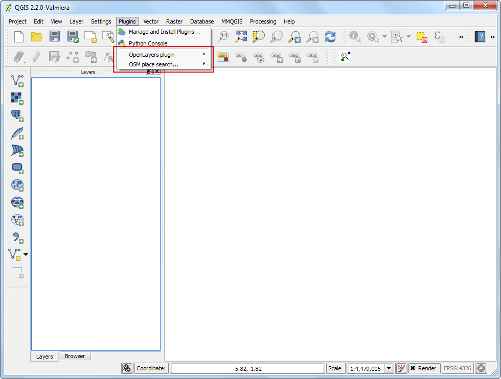
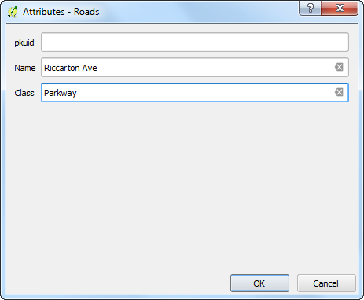
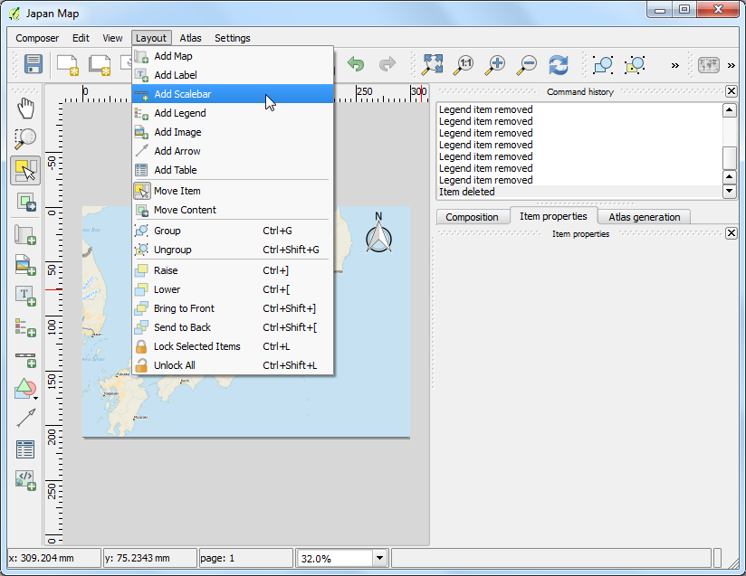
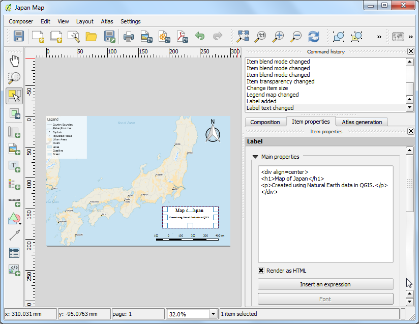
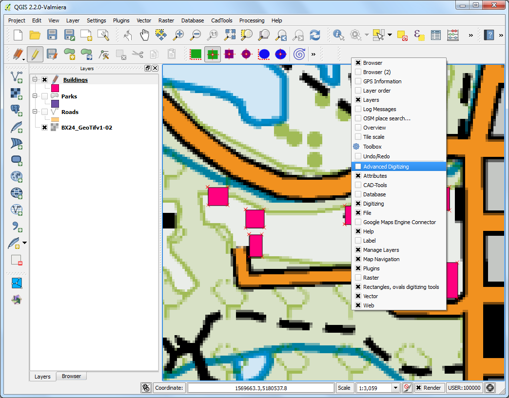
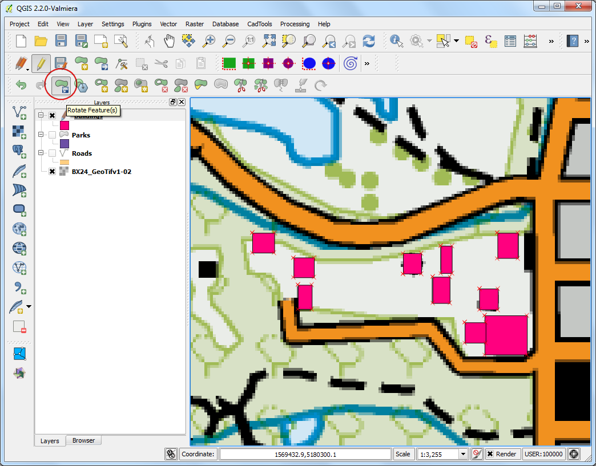

Kaartgegevens digitaliseren
[ Download PDF
A4
Letter ]
Digitaliseren is één van de meest voorkomende taken die een specialist in GIS moet uitvoeren. Vaak wordt een groot gedeelte van GIS-tijd gebruikt voor het digitaliseren van rastergegevens naar het maken van vectorlagen die u gebruikt in uw analyses. QGIS heeft krachtige mogelijkheden voor het digitaliseren en bewerken op het scherm, die we in deze handleiding zullen verkennen.
Overzicht van de taak
We zullen een raster topografische kaart gebruiken en verschillende vectorlagen maken die objecten rondom een park weergeven.
Andere vaardigheden die u zult leren
Procedure
Ga naar . Zoek het gedownloade BX24_GeoTifv1-03.tif op en klik op Openen.

Dit is een groot rasterbestand en het zou u kunnen opvallen dat wanneer u op de kaart inzoomt of die verschuift, dat het enige tijd vergt voor de afbeelding is gerenderd. QGIS biedt een eenvoudige oplossing om rasters veel sneller te laden door Afbeeldingspiramiden te gebruiken. QGIS maakt vooraf gerenderde tegels in verschillende resoluties en deze worden aan u gepresenteerd in plaats van het volledige raster. Dat maakt het navigeren over de kaart snel en responsief. Klik met rechts op de laag BX24_GeoTifv1-03 en kies Eigenschappen.

Kies de tab Piramiden. Houdt de Ctrl-toets ingedrukt en selecteer alle aangeboden resoluties in het paneel Resoluties. Laat de andere opties op hun standaarden staan en klik op Piramiden bouwen. Als het proces voltooid is, klik dan op OK.

Gebruik, terug in het hoofdvenster van QGIS, het gereedschap Zoomen om het gebied van Hagley Park in Christchurch te lokaliseren. Dat is het park dat we zullen digitaliseren.

Voor we beginnen moeten we de standaard opties voor Digitaliseren instellen. Ga naar .

Selecteer de tab Digitaliseren in het dialoogvenster Opties. Stel de Default snap mode in op Naar hoekpunt en segment. Dit stelt u in staat te snappen aan het dichtstbijzijnde hoekpunt of lijnsegment. Ik heb zelf de voorkeur om de Standaard ‘snapping’-tolerantie en Zoekradius voor hoekpuntaanpassingen in te stellen op pixels in plaats van op kaarteenheden. Dat zal er voor zorgen dat de afstand voor snappen hetzelfde blijft, ongeacht het zoomniveau. Afhankelijk van de resolutie van uw computerscherm, kunt u een toepasselijke waarde kiezen. Klik op OK.

Nu zijn we klaar om te beginnen met digitaliseren. We zullen eerst een wegenlaag maken en de wegen rondom het gebied van het park digitaliseren. Selecteer . Als u dat liever doet kunt u in plaats daarvan ook kiezen voor Nieuwe Shapefile-laag.... Spatialite is een open database-indeling, soortgelijk aan de indeling van ESRI’s geodatabase. Spatialite-database is opgenomen in één bestand op uw harde schijf en kan verschillende ruimtelijke typen (punt, lijn, polygoon) als ook niet-ruimtelijke lagen bevatten. Dat maakt het veel eenvoudiger om te verplaatsen dan een stapel shapefiles. In deze handleiding maken we een aantal polygoonlagen en een lijnlaag, dus is een Spatialite-database meer geschikt. U kunt altijd nog een Spatialite-laag laden en die opslaan als een shapefile of enige andere indeling die u wilt.

klik, in het dialoogvenster Nieuwe Spatialite-laag, op de knop ... en sla een nieuwe database voor Spatialite, genaamd nztopo.sqlite, op. Kies als Laagnaam Roads en selecteer Lijn als het Type. De basis topografische kaart is in het CRS EPSG:2193 - NZGD 2000, dus kunnen we dezelfde voor onze laag “Roads” selecteren. Selecteer het vak Maak een automatisch ophogend primair sleutelveld aan. Dit zal een veld pkuid in de attributentabel maken en automatisch een uniek numeriek ID toewijzen aan elk object. Bij het maken van een GIS-laag moet u beslissen welke attributen elk object zal moeten hebben. Omdat dit ene laag met wegen is, zullen we 2 basisattributen hebben - Naam en Klasse. Voer Naam in als de Naam van het attribuut in het gedeelte Nieuw attribuut en klik op Toevoegen aan attributenlijst.

Maak op soortgelijke wijze een nieuw attribuut Klasse van het type Text data. Klik op OK.

Klik, als de laag eenmaal is geladen, op de knop Bewerken aan-/uitzetten om de laag in de modus Berwerken te zetten.

Klik op de knop Object toevoegen. Klik op het kaartvenster om een nieuw punt toe te voegen. Voeg nieuwe punten toe langs het wegobject. Als u eenmaal een segment van de weg hebt gedigitaliseerd, klik met rechts om het object te beëindigen.
Notitie
U kunt het wieltje van de muis gebruiken om in- of uit te zoomen tijdens het digitaliseren. U kunt ook het muiswiel ingedrukt houden en de muis verplaatsen om te verschuiven.

Nadat u met rechts heeft geklikt om het object te beëindigen, zult u een pop-up dialoogvenster krijgen, genaamd Attributen. Hier kunt u attributen invoeren voor het nieuw gemaakte object. Omdat pkuid een automatisch ophogend veld is, zult u niet in staat zijn daar handmatig een waarde in te geven. Laat het leeg en voer de naam van de weg in zoals die verschijnt op de topografische kaart. Wijs ook, optioneel, een waarde voor Klasse toe. Klik op OK.

De standaard stijl voor de nieuwe lijnlaag is een dunne lijn. Laten we die wijzigen zodat we de gedigitaliseerde objecten in het kaartvenster beter kunnen zien. Klik met rechts op de laag Roads en selecteer Eigenschappen.

Selecteer de tab Stijl in het dialoogvenster Laag-eigenschappen. Kies een dikkere lijnstijl zoals Primary uit de vooraf gedefinieerde stijlen. Klik op OK.

Nu zult u het gedigitaliseerde wegobject duidelijk zien. Klik op Opslaan voor geselecteerde laag/lagen om het nieuwe object op schijf te bewaren.

Voor we de resterende wegen gaan digitaliseren, is het belangrijk om enkele andere instellingen bij te werken die belangrijk zijn om een foutenvrije laag te maken. Ga naar .

Selecteer, in het dialoogvenster Snapping-opties, ‘Topologie bewerken’ aanzetten. Deze optie zorgt er voor dat de algemene grenzen juist wordne behouden in polygoonlagen. Selecteer ook Snappen op snijpunten aanzetten wat u in staat stelt te snappen op een kruising van een achtergrondlaag.

Nu kunt u op de knop Object toevoegen klikken en andere wegen rondom het park digitaliseren. Zorg er voor om op Wijzgingen laag opslaan nadat u een nieuw object heeft toegevoegd om uw werk op te slaan. Een handig gereedschap om u te helpen met digitaliseren is het Knooppunt-gereedschap. Klik op de knop Knooppunt-gereedschap.

Klik, als het Knooppunt-gereedschap eenmaal is geactiveerd, op een willekeurig object om de punten weer te geven. Klik op een punt om het te selecteren. Het punt zal van kleur wijzigen als het eenmaal is geselecteerd. Nu kunt u klikken en slepen om het punt te verplaatsen. Dit is handig als u aanpassingen wilt maken nadat het object is gemaakt. U kunt een geselecteerd punt ook verwijderen door op de toets Delete te klikken. (Option+Delete op een Mac)

Klik op de knop Bewerken aan/uitzetten als u eenmaal klaar bent met het digitaliseren van alle wegen,

Nu zullen we een polygoonlaag maken die de grenzen van het park weergeeft. Ga naar . Selecteer de database nztopo.sqlite uit de keuzelijst. Noem de nieuwe laag Parks. Selecteer Polygoon als het Type. Maak een nieuw attribuut, genaamd Naam. Klik op OK.

Klik op de knop Object toevoegen en klik op het kaartvenster om een polygoonpunt toe te voegen. Digitaliseer de polygoon die het park weergeeft. Zorg er voor dat u aan de punten van de wegen snapt, zodat er geen gaten tussen de polygonen van het park en de lijnen van de wegen zijn. Klik met rechts om de polygoon te voltooien.

Voer de naam van het park in in het pop-upvenster Attributen.

Polygoonlagen bieden nog ene andere zeer handige instelling, namelijk Kruisingen vermijden. Ga naar . Selecteer het vak in de kolom Kruisingen vermijden in de rij voor de laag Parks. Klik op OK.

Klik nu op Object toevoegen om een polygoon toe te voegen. Met Kruisingen vermijden zult u in staat zijn snel een nieuwe polygoon te digitaliseren zonder u zorgen te hoeven maken over het exact snappen aan de nabijgelegen polygonen.

klik met rechts om de polygoon te voltooien en voer de attributen in. Magisch wordt de nieuwe polygoon verkleind en exact gesnapd aan de grenzen van de nabijgelegen polygonen! Dit is zeer handig bij het digitaliseren van complexe grenzen waar u niet erg precies hoeft te zijn en nog steeds een topologisch juiste polygoon verkrijgt. Klik op Bewerken aan/uitzetten om het bewerken van de laag Parks te voltooien.

Nu is het tijd om een laag met gebouwen te digitaliseren. Maak een nieuwe polygoonlaag, genaamd Buildings, door te gana naar .

Als de laag Buildings eenmaal is toegevoegd, schakel dan de lagen Parks en Roads uit zodat de basis topokaart zichtbaar is. Selecteer de laag Buildings en klik op Bewerken aan/uitzetten.
Digitaliseren van gebouwen kan een langdurige taak zijn. Het is ook moeilijk om handmatig punten toe te voegen zodat de randen loodrecht staan en een rechthoek vormen. We zullen een plug-in gebruiken, genaamd Rectangles Ovals Digitizing om met deze taak te helpen. Zie Plug-ins gebruiken om te zien hoe u plug-ins zoekt en installeert. Alls de plug-in Rectangles Ovals Digitizing eenmaal is geïnstalleerd, zult u boven het kaartvenster een nieuwe werkbalk zien.

Zoom naar een gebied met gebouwen en klik op de knop Rectangle by Extent. Klik en sleep de muis om een perfecte rechthoek te tekenen. Voeg op soortgelijk wijze andere gebouwen toe.

Het zal u opvallen dat sommige gebouwen niet verticaal staan. We zullen een rechthoek onder een hoek moeten tekenen om met de omtrek van het gebouw overeen te komen. Klik op Rectangle from center.

Klik in het midden van het gebouw en sleep de muis om een verticale rechthoek te tekenen.

We moeten deze rechthoek draaien om overeen te komen met de afbeelding op de topokaart. Het gereedschap om te draaien is beschikbaar op de werkbalk Geavanceerd digitaliseren. Klik met rechts op ene leeg gebied in het gedeelte van de werkbalk en schakel de werkbalk Geavanceerd digitaliseren in.

Klik op de knop Object(en) draaien.

Gebruik het gereedschap Object(en) selecteren om de polygoon te selecteren die u wilt draaien. Als het gereedschap Object(en) draaien eenmaal is geactiveerd, zult u een kruisdraad in het midden van de polygoon zijn. Klik exact op die kruisdraad en sleep met de muis terwijl u de linker muisknop ingedrukt houdt. Een voorbeeld van het gedraaide object zal verschijnen. Laat de muisknop los als de polygoon is uitgelijnd met de omtrek van het gebouw.

Sla de bewerkingen op de laag op en klik op Bewerken aan/uitzetten als u gered bent met het digitaliseren van alle gebouwen. U kunt de lagen verslepen om hun volgorde van weergave te wijzigen.

De taak van het digitaliseren is nu voltooid. U kunt nog spelen met de opties voor opmaak en labelen in Laag-eigenschappen om een goed uitziende kaart te maken van de gegevens die u heeft gemaakt.